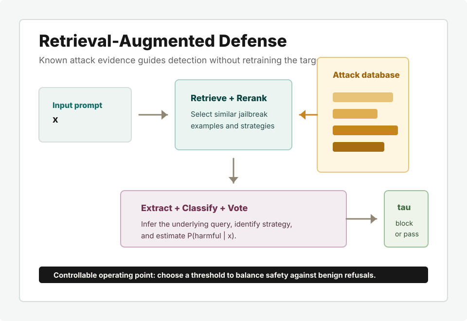

Retrieve
Embed the input prompt and retrieve similar jailbreak examples from the database.
arXiv preprint · cs.CR
Department of Engineering, University of Cambridge

Large language models remain vulnerable to jailbreak attacks that disguise harmful intent inside adversarial prompts. These attacks change quickly, which makes it difficult for defense systems to adapt without retraining, and a single fixed blocking policy may not suit all deployment settings.
Retrieval-Augmented Defense (RAD) addresses these challenges by storing known attack examples in a retrieval database. For a new prompt, RAD retrieves related examples, reasons about the likely original user query and jailbreak strategy, and estimates the probability that the prompt is harmful. The resulting score can be thresholded to choose an operating point on the safety-utility trade-off.
The defender is an online pipeline with five stages after an offline database construction step.
Embed the input prompt and retrieve similar jailbreak examples from the database.
Select the most relevant strategies, including a no-strategy option for benign prompts.
Infer candidate underlying user queries using the retrieved strategy and guidance.
Estimate harmfulness for each extracted query and associated strategy.
Aggregate evidence into P(harmful | x), then compare it with threshold tau.
Lower attack score and lower false refusal rate are better.
On StrongREJECT, RAD reduces attack scores for strong jailbreak methods such as PAIR and PAP while keeping benign false refusals low. The table below shows representative results for the Qwen-2.5-14B-Instruct target model at threshold 0.5.
| Defense | PAIR-1 | PAIR-5 | PAP | Template | DAN | FRR (%) |
|---|---|---|---|---|---|---|
| No defense | 71.45 | 85.50 | 81.51 | 24.99 | 9.15 | 0.00 |
| Safety Context Retrieval | 36.10 | 62.46 | 43.37 | 0.54 | 2.38 | 0.32 |
| RAD-Sim-14B | 20.09 | 39.06 | 35.22 | 0.15 | 0.18 | 1.28 |
| RAD-Base-14B | 13.34 | 43.49 | 30.91 | 0.03 | 0.18 | 2.56 |
@misc{yang2025retrievalaugmenteddefense,
title = {Retrieval-Augmented Defense: Adaptive and Controllable Jailbreak Prevention for Large Language Models},
author = {Yang, Guangyu and Chen, Jinghong and Mei, Jingbiao and Lin, Weizhe and Byrne, Bill},
year = {2025},
eprint = {2508.16406},
archivePrefix = {arXiv},
primaryClass = {cs.CR},
doi = {10.48550/arXiv.2508.16406}
}